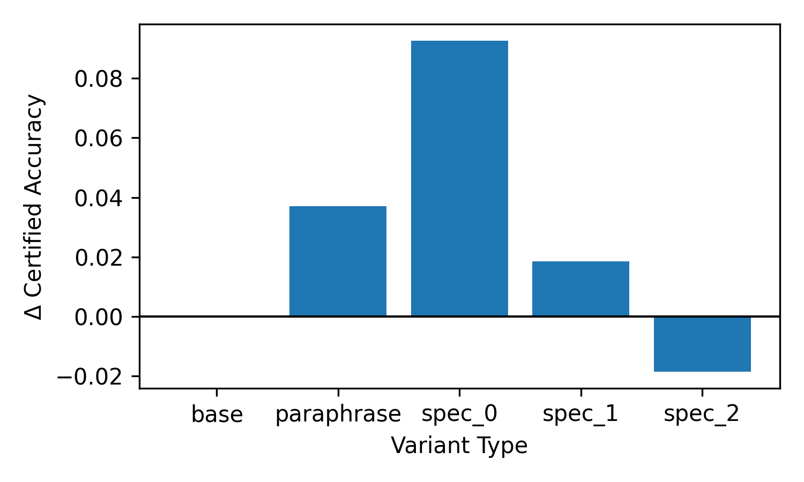

A five-method linear study asking whether solver-grounded feedback — not just more attempts — measurably improves an LLM's verified performance on combinatorial search.
Not whether an LLM can emit a candidate, but whether solver-grounded feedback measurably improves verified performance over mere repeated attempts under matched compute budgets.
We present a candidate-first linear evaluation protocol for
LLM + SMT verifiable reasoning under explicit feedback-granularity control. The
main study compares five methods — a one-shot reference, three compute-matched
retry baselines, and a new conflict-directed verifier-guided search method
(cd_vgs_core_rank) that uses unsat-core structure for candidate
ranking and targeted repair.
The candidate contract is strict: the generator either returns a full satisfying assignment or an UNSAT claim, both of which the solver certifies or refutes. The flagship method exploits the solver's conflict core as natural-language hints the LLM can consume in the next round — the feedback is the supervision signal.
The implementation preserves a legacy trace-based architecture for transfer evidence (Sudoku 4×4 appendix) while moving the main paper path to the stricter candidate-verification interface. All experiments are reproducible locally with a single command.
A local LLM emits a structured candidate. Z3 certifies the
assignment or returns an unsat-core — the minimal conflict
among the violated constraints. That core becomes a prompt-level hint for
the next round; the search is steered by the solver, not the sampler.
The primary causal comparison is among the four compute-matched
multi-round methods. They share identical K, R,
timeouts, parsing rules, and generation settings — the retry baselines
differ only in carried-forward verifier feedback, while
cd_vgs_core_rank reallocates the same budget via
conflict-directed search.
| # | Method | Description |
|---|---|---|
| 01 | one_shot | baselineSingle attempt, no retries. Retained as a repair-gain reference point for the multi-round arms. |
| 02 | multi_no_feedback | retryCompute-matched repeated attempts with independent sampling. No verifier signal is carried forward — tests whether more tries alone close the gap. |
| 03 | multi_generic_feedback | retrySame budget, but the prompt carries a generic hint ("the previous assignment did not satisfy all constraints"). Isolates the effect of knowing a failure occurred. |
| 04 | multi_unsat_core_feedback | retryThe prompt carries the unsat-core — the concrete set of violated constraints returned by Z3 — as natural-language hints. Isolates the effect of solver-grounded diagnostic richness. |
| 05 | cd_vgs_core_rank Flagship | cegvrConflict-Directed Verifier-Guided Search with CoreRank candidate ordering. Same K × R budget is redistributed: the solver's conflict core drives which candidate variables to revise vs. keep fixed, and unsat-core overlap ranks subsequent candidates. |
A representative 4-variable linear system. The LLM's first candidate violates two constraints; the unsat-core narrows the revision to a specific variable subset, and the next round produces a certified satisfying assignment.
Observations from the five-method linear study. The metrics panel covers verified solve rate, SAT certification rate, solver calls per certified solve, and McNemar-paired significance across the compute-matched arms.
cd_vgs_core_rank and unsat_core_feedback Pareto-dominate the no-feedback arm on verified solve rate.
Final numbers from the Qwen3-30B-A3B run on an A100-80 GB Colab, each arm evaluated on 500 linear-arithmetic SMT problems over 3 seeds. Click an arm to see its certified accuracy, SAT/UNSAT breakdown, and budget-exceeded count.
Delta-plots under problem-level perturbations: coefficient scaling, constraint permutation, and variable relabeling. A method is robust if its verified solve rate stays put under superficial re-encodings of the same problem.

The main paper path is executed by a single shell script. It bootstraps Python 3.11, (re)generates the linear benchmark, runs the five-method arm matrix, and rebuilds the figures, tables, and LaTeX PDF end-to-end. The paper fails closed if the local llama.cpp endpoint is unavailable — no silent stub fallback.